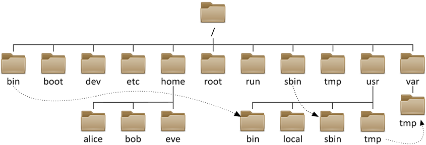

课程简介
-
本课程将介绍 C/C++ 语言的基础知识，包括 C/C++ 语言的特性、语法、标准库等。
-
C++ 语言部分将不涉及面向对象的内容，因此大部分的语法与 C 语言相同。
课程目标
-
学习 C/C++ 语法后和标准库后，编写简单的命令行程序，如 ls 命令。
$ ls files ... -
通过 C 语言和单片机，实现电子设备控制。

开发环境 & 第一个命令
课程的开发环境包括: Linux 服务器和 Dev C++，我们将首先从 Linux 下进行，后面再慢慢接触 Dev C++，所以我们首先要简单熟悉一下 Linux 的一些操作。
我们可以使用下面的命令登录到服务器：（用户名和IP替换成实际的）
$ ssh name@ip
像黑客一样使用命令行 --- Linux 命令行入门
1. Linux 文件系统树
以根目录（/）为起点的树形结构：Linux 文件系统采用单一的根目录，所有的文件和目录都挂载在根目录下的不同位置。例如，“/bin” 目录存放着基本的用户命令，像 “ls”“cp” 等命令的可执行文件都在这里；“/etc” 目录主要存放系统的配置文件，如网络配置文件 “/etc/network/interfaces”（在基于 Debian 的系统中）。 分区挂载灵活：可以将不同的分区挂载到根目录下的不同子目录。例如，用户可以将一个专门用于存储用户数据的分区挂载到 “/home” 目录下，这样所有用户的主目录就存储在这个分区中。

2. Windows 文件系统
Windows 文件系统采用磁盘分区的方式来组织文件，每个磁盘分区都对应一个磁盘驱动器，磁盘驱动器下可以包含多个目录，每个目录可以包含多个文件。
文件路径
1. 绝对路径
在 Linux 中，绝对路径是指从根目录（/）开始，通过一系列目录和文件名组成的路径。绝对路径的格式为：`/目录1/目录2/.../文件名` 。
2. 相对路径
在 Linux 中，相对路径是指相对于当前目录的路径。相对路径的格式为：`./当前目录/目录1/目录2/.../文件名` 。
什么是命令行
Linux 命令是在 Linux 操作系统环境下，用户与系统进行交互的工具。用户可以通过在终端（Terminal）中输入相应的命令，让系统执行各种任务，包括文件操作、进程管理、系统配置、网络管理等多个方面。以下对 Linux 命令的简单介绍。
第一个 C++ 程序
#include <iostream>
using namespace std;
int main() {
cout << "Hello, World!" << endl;
return 0;
}